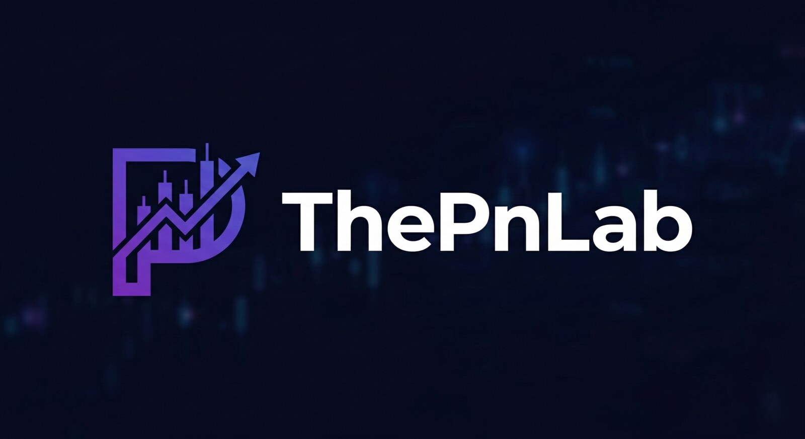

ThePnLab
Une plateforme full-stack de paper trading structurée autour des portefeuilles, des positions, de cycles de décision planifiés, de la logique sur produits dérivés et d’une couche de coaching explicable.
Fondateur et développeur unique
FastAPI · PostgreSQL
React · interface responsive
Planifié toutes les 30 minutes
Le paper trading doit expliquer les décisions, pas seulement reproduire les prix.
De nombreux simulateurs se limitent à la saisie d’ordres et à la valeur du portefeuille. ThePnLab a été conçu autour de la boucle décisionnelle complète : sélection, état du portefeuille, dimensionnement des positions, exécution, suivi du risque et explication a posteriori.

Un système full-stack modulaire.
- Les routeurs FastAPI séparent authentification, marché, portefeuille, replay, bot et coaching.
- Les modèles PostgreSQL conservent utilisateurs, portefeuilles, positions et état opérationnel.
- Le frontend React organise les parcours marché, portefeuille, classement, replay et paramètres.
- Les tests couvrent authentification, planification, comportement du portefeuille, marges, dérivés et métriques système.
Les positions sont modélisées comme un état contraint, pas comme des opérations isolées.
Le backend comprend la comptabilité du portefeuille, le cycle de vie des positions, les marges et liquidations, la gestion overnight et le suivi des seuils take-profit / stop-loss. L’application constitue ainsi un projet système autant qu’un projet d’interface.
ThePnLab est un produit éducatif de paper trading. Il n’exécute aucun ordre en argent réel et ne constitue pas un conseil en investissement.
Une couche assistée par recherche transforme l’état du système en retour pédagogique.
La couche de coaching combine le contexte du portefeuille à une base de connaissances sélectionnée afin d’expliquer les décisions et de faire ressortir les points d’apprentissage. L’objectif est la traçabilité : les retours doivent être reliés à un état observable et à des concepts documentés, plutôt que présentés comme des recommandations opaques.